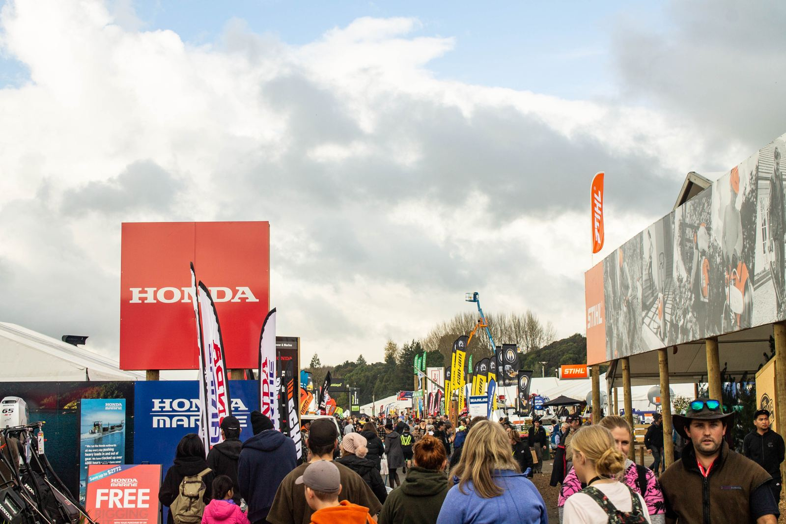

Expos · Expos
Fieldays 2027
- Dates
- –
- Venue
- Mystery Creek Events Centre, 125 Mystery Creek Road, Ōhaupō
- Location
- Hamilton, New Zealand
- Format
- In-person
- Category
- Expos
- Industry
- National agricultural field days
- Organiser
- Fieldays
- Price
- Official tickets (NZD): adult one-day online $36 / at the gate $42; child 5–14 years $18; child 4 years and under free; adult four-day online $120 / gate $144; family one-day online $108 / gate $120. A transaction fee applies to online purchases.
- Official website
- https://www.fieldays.co.nz/
About
Dates are local to the host city. Official: 16–19 June 2027 at Mystery Creek Events Centre, 125 Mystery Creek Road, Ōhaupō (described as a 15-minute drive from Hamilton's CBD). Official hours: Wednesday–Friday 08:00–17:00; Super Saturday 08:00–16:00. Official tickets (NZD): adult one-day online $36 / gate $42; child 5–14 $18; child 4 and under free; adult four-day online $120 / gate $144; family one-day online $108 / gate $120; a transaction fee applies to online purchases. 'Over 1,100 exhibitors' and 'an audience of over 100,000' are unlabelled scale lines next to 2027 copy and were not stored. A longer legal organiser name beyond the Fieldays brand was not clearly labelled on the homepage fetch. 58th year.
Topics: agriculture, agritech, primary industries, livestock, rural living.
Sources
- Official — https://www.fieldays.co.nz/